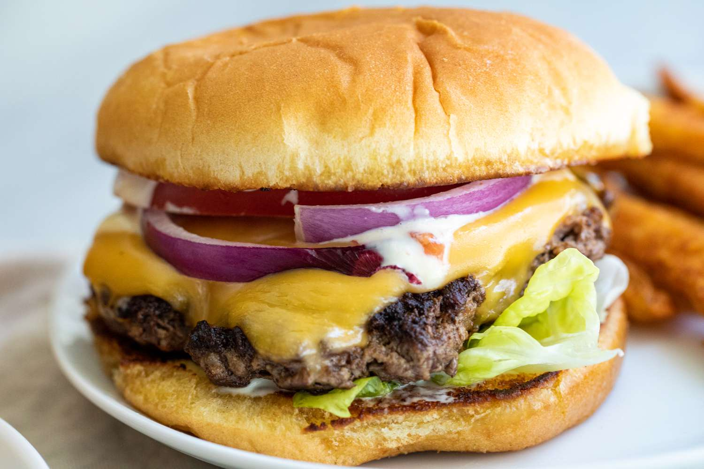

Home
Smashburgers

Smashburgers..burgers, but better and a little crispy.
Not much compares to a juicy bit of a smashburger. Top it with lettuce, tomato, and some mustard and you'll be making this bad boy weekly
Prep time is maybe 5 minutes depending on what veggies you have to prepare..cooking time of 4-5 minutes per burger..you have yourself a full dinner in less than 15 minutes.
Ingredients
- 1 lb beef
- head of lettuce
- 2-3 tomatoes depending on size
- Burger Buns
- American or pepperjack cheese slices
- Desired seasonings and dressings
Steps
- Prep your lettuce and tomato and set to the side.
- Heat a pan to medium high heat.
- While the pan heats, prep your cheese and seasonings.
- When the pan is hot, take a ball of burger and place it on the pan then smashing it down hard making the burger incredibly thin.
- Season your burger and let it cook for 1-2 minutes, then flip.
- While the other side cooks, put some cheese on there and put a lid in order to melt the cheese.
- When your cheese is melted, take the burger off the pan and onto a plate to cool.
- Make the remaining smashburgers you'd desire.
- Toast your buns before plating, adding your lettuce and tomato and the dressing that feels right to you and ENJOY!